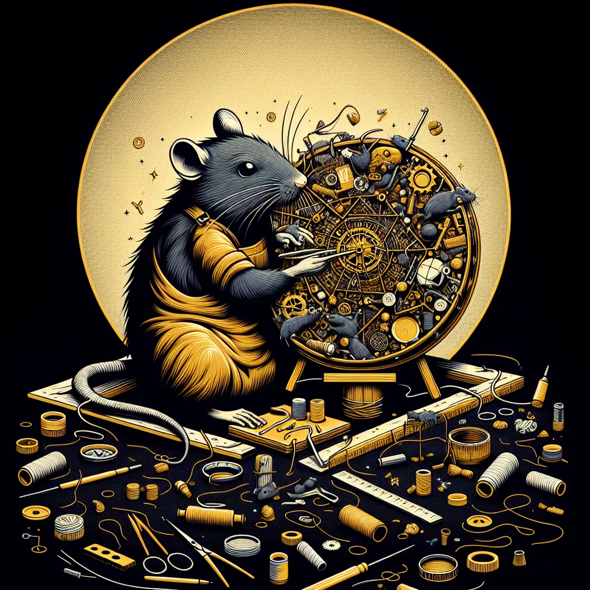

{kind=link}
{kind=link}
Tunnel Vision: The Underground Artisans of Ratopolis
Beneath the bustling streets of Ratopolis exists a hidden world of creativity where rat artisans transform discarded materials into magnificent works of art, reshaping the subterranean landscape and fostering a vibrant community that remains largely unseen by the city's surface dwellers.
4 minute read •
Comments

Beneath the bustling streets of Ratopolis exists a hidden world of creativity where rat artisans transform discarded materials into magnificent works of art, reshaping the subterranean landscape and fostering a vibrant community that remains largely unseen by the city's surface dwellers. This dynamic art scene not only enhances the city's aesthetic appeal but also embodies a rich cultural tapestry interwoven with history and identity.
Walking through the dimly lit tunnels under Ratopolis, you're met with murals made from candy wrappers, sculptures pieced together from bottle caps, and mosaics crafted from shattered glass. Behind each creation is an artisan; driven by passion and a love for community, they redefine what it means to find beauty in the overlooked.
"This isn't just art; it's a revolution," exclaims Twitch McScurry, a renowned muralist who has turned forgotten tunnels into dazzling corridors. His works, bathed in vibrant hues, reflect a deep sense of collective pride and ingeniously bridge cultural gaps. Using everyday waste, Twitch spins stories of Ratopolis’s past and glimpses of its future.
In these tunnels, artisans aren't simply creators but guardians of tradition. The art scene fosters camaraderie and a profound sense of belonging among rats who share ideas and hold events celebrating their craft. As Ratticus Artimore, an organizer of the annual Tunnel Tryst exhibition articulates, "Our art doesn't just beautify; it unites us."
Art in Ratopolis dates back centuries, serving as a medium for political commentary and social critique. "Art is the heartbeat of our tunnels," says Dumpling the Tanner, a local historian. "It reveals not only the struggles of the past but also the dreams of our future." Businesses in Ratopolis have begun sponsoring public art installations to harness this power, supporting artisans with resources to explore new facets of creativity.
Working with limited resources presents significant challenges for these artisans. They often deal with scarce materials and cramped spaces, limiting the scope of their projects. Yet, the potential for growth is immense. Collaborations with neighboring rat communities and support from the city could spur an art renaissance underground.
"We're always on the lookout for more paws to help and more eyes to appreciate," says Blossom Whiskerstein, a mosaic artist whose pieces depict the interconnections of rat society. As popular as these creations are, garnering support is tough. "Our art scene is a-maize-ing, but we need more support to keep it thriving," a local resident points out, stressing the importance of investing in these community-driven projects.
Despite potential criticisms that underground art is an indulgence rather than necessity, these artisans argue otherwise. Art has power, they say, not only to inspire but also to instigate change across Ratopolis. The backdrop may be underground, but the influence reaches every corner of the city.
Ratopolis itself, a cultural hub laced with joy and creativity, boasts not just underground art but surface landmarks and activities enlivening the broader community spirit. From music festivals to literary gatherings, the city’s vibrance reflects the same tapestry that its tunnel artists weave beneath the surface.
As the narrative of Ratopolis unfolds, the question remains: can the efforts of these artisans breach the surface to achieve even greater societal impact? Plans for expanding beyond underground installations and embracing alternate forms of expression are on the horizon.
Looking ahead, tunnel visionaries envision a home where all rats have the opportunity to engage in and appreciate art, transcending physical and metaphorical boundaries. Each creation is a testament to Ratopolis’s identity, a call to appreciate and preserve the delicate dance between art and life.
In conclusion, the story of the underground artisans of Ratopolis reminds us of the undeniable power of creativity in shaping our worlds. Art can redefine landscapes and identities and strengthen communities. Let us support and celebrate these artists as diligent stewards of Ratopolis' future. As you walk the streets of Ratopolis, consider descending into those vibrant tunnels, where the heart of the city beats strongest and brightest. Explore, appreciate, and become part of this awe-inspiring legacy.
Looking for more in-depth news and exclusive content? Follow RAT TV for real-time updates, behind-the-scenes insights and the latest breaking news.
Walking through the dimly lit tunnels under Ratopolis, you're met with murals made from candy wrappers, sculptures pieced together from bottle caps, and mosaics crafted from shattered glass. Behind each creation is an artisan; driven by passion and a love for community, they redefine what it means to find beauty in the overlooked.
"This isn't just art; it's a revolution," exclaims Twitch McScurry, a renowned muralist who has turned forgotten tunnels into dazzling corridors. His works, bathed in vibrant hues, reflect a deep sense of collective pride and ingeniously bridge cultural gaps. Using everyday waste, Twitch spins stories of Ratopolis’s past and glimpses of its future.
In these tunnels, artisans aren't simply creators but guardians of tradition. The art scene fosters camaraderie and a profound sense of belonging among rats who share ideas and hold events celebrating their craft. As Ratticus Artimore, an organizer of the annual Tunnel Tryst exhibition articulates, "Our art doesn't just beautify; it unites us."
Art in Ratopolis dates back centuries, serving as a medium for political commentary and social critique. "Art is the heartbeat of our tunnels," says Dumpling the Tanner, a local historian. "It reveals not only the struggles of the past but also the dreams of our future." Businesses in Ratopolis have begun sponsoring public art installations to harness this power, supporting artisans with resources to explore new facets of creativity.
Working with limited resources presents significant challenges for these artisans. They often deal with scarce materials and cramped spaces, limiting the scope of their projects. Yet, the potential for growth is immense. Collaborations with neighboring rat communities and support from the city could spur an art renaissance underground.
"We're always on the lookout for more paws to help and more eyes to appreciate," says Blossom Whiskerstein, a mosaic artist whose pieces depict the interconnections of rat society. As popular as these creations are, garnering support is tough. "Our art scene is a-maize-ing, but we need more support to keep it thriving," a local resident points out, stressing the importance of investing in these community-driven projects.
Despite potential criticisms that underground art is an indulgence rather than necessity, these artisans argue otherwise. Art has power, they say, not only to inspire but also to instigate change across Ratopolis. The backdrop may be underground, but the influence reaches every corner of the city.
Ratopolis itself, a cultural hub laced with joy and creativity, boasts not just underground art but surface landmarks and activities enlivening the broader community spirit. From music festivals to literary gatherings, the city’s vibrance reflects the same tapestry that its tunnel artists weave beneath the surface.
As the narrative of Ratopolis unfolds, the question remains: can the efforts of these artisans breach the surface to achieve even greater societal impact? Plans for expanding beyond underground installations and embracing alternate forms of expression are on the horizon.
Looking ahead, tunnel visionaries envision a home where all rats have the opportunity to engage in and appreciate art, transcending physical and metaphorical boundaries. Each creation is a testament to Ratopolis’s identity, a call to appreciate and preserve the delicate dance between art and life.
In conclusion, the story of the underground artisans of Ratopolis reminds us of the undeniable power of creativity in shaping our worlds. Art can redefine landscapes and identities and strengthen communities. Let us support and celebrate these artists as diligent stewards of Ratopolis' future. As you walk the streets of Ratopolis, consider descending into those vibrant tunnels, where the heart of the city beats strongest and brightest. Explore, appreciate, and become part of this awe-inspiring legacy.
Looking for more in-depth news and exclusive content? Follow RAT TV for real-time updates, behind-the-scenes insights and the latest breaking news.
Comments